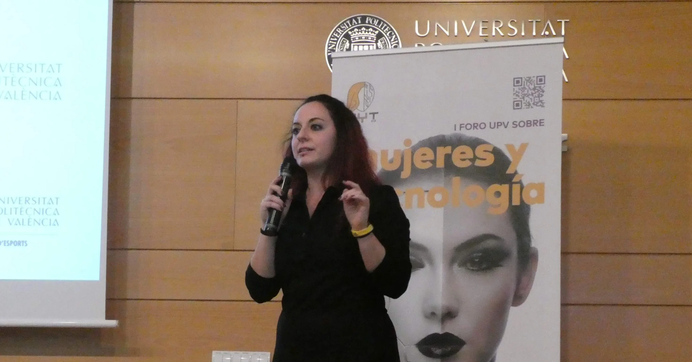
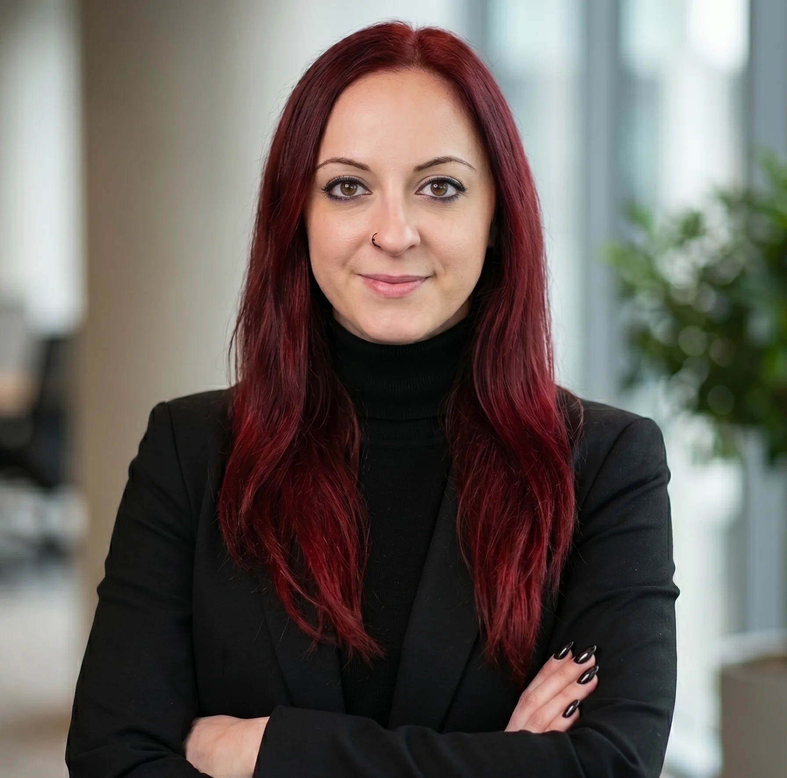
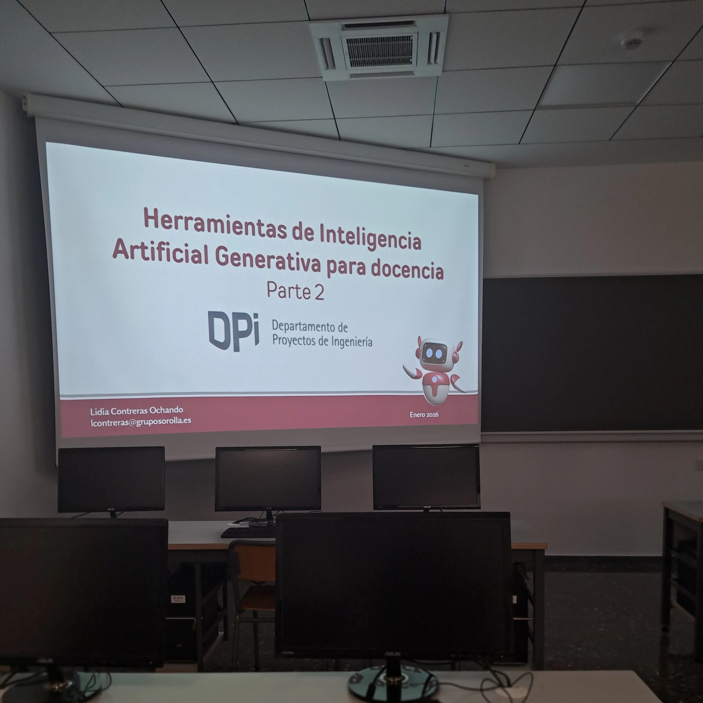
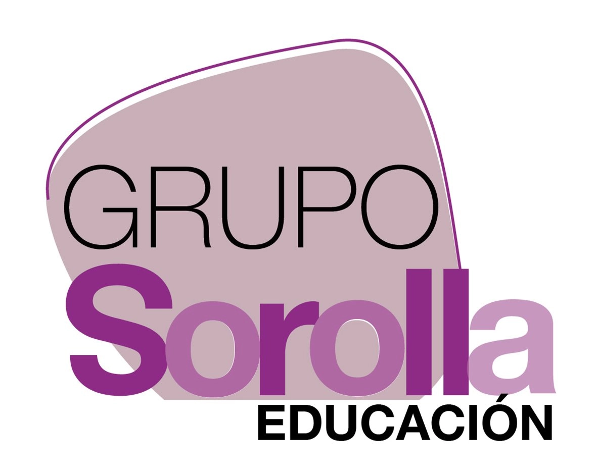
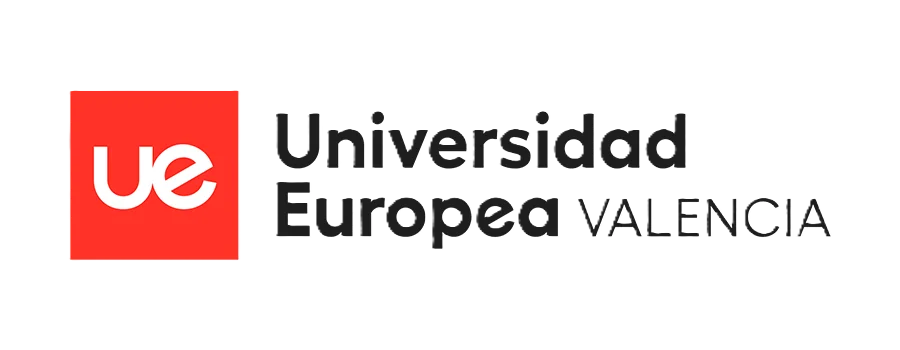
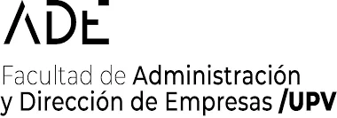
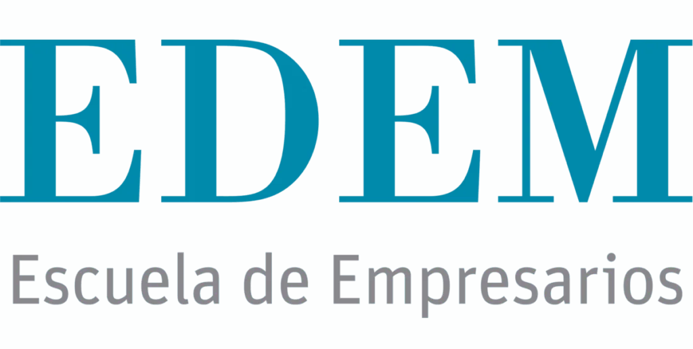
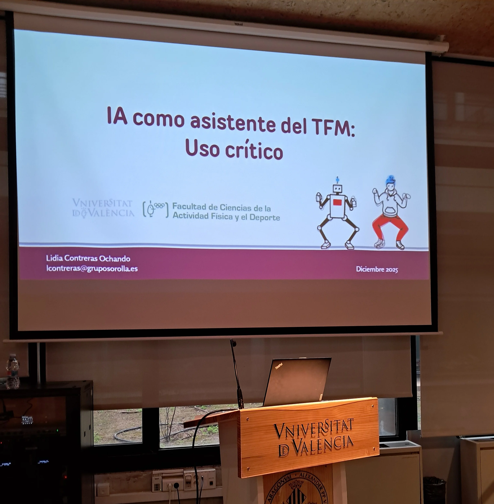
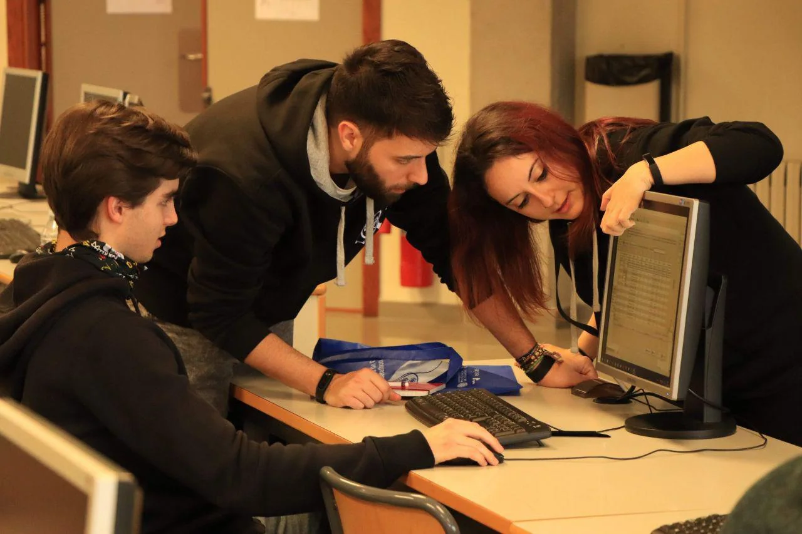
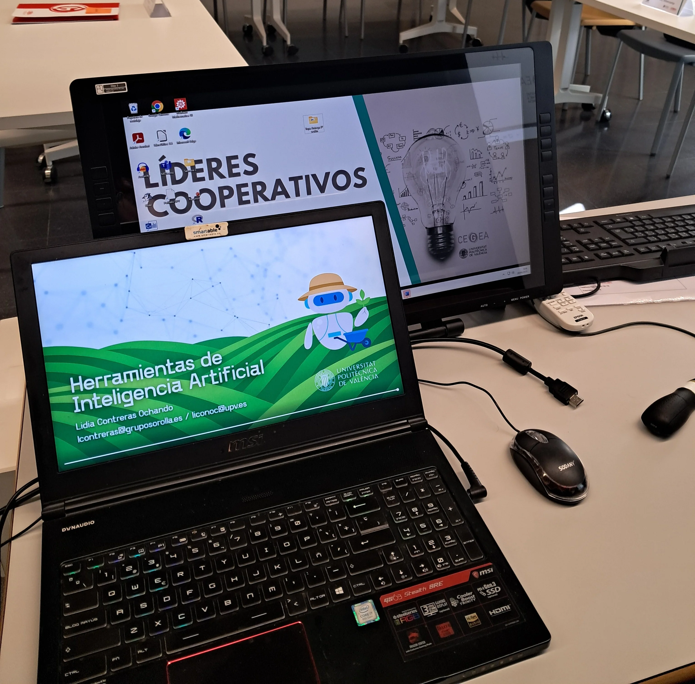

Perfil

Doctora en Informática (UPV), especialista en IA y ciencia de datos, con experiencia en universidad, FP y formación para equipos.

Doctora en Informática · Especialista en IA · Creadora de la Comunidad LID.IA
Si buscas formación en IA para tu institución, aquí tienes una vista rápida de mi perfil. El detalle académico completo está disponible justo debajo.

Doctora en Informática (UPV), especialista en IA y ciencia de datos, con experiencia en universidad, FP y formación para equipos.
8.ª Mejor Docente FP de España (Premios EDUCA ABANCA 2026), embajadora Google WTM y participación en NASA Datanauts.

Cursos y talleres de IA aplicada, diseño de contenidos prácticos y acompañamiento a claustros y equipos docentes.




Diseño formaciones aplicadas y adaptadas al perfil de cada institución: claustros, alumnado universitario, FP y equipos profesionales.

IA aplicada a docencia e investigación, uso crítico de IA en TFG/TFM y contenidos especializados como IA en ciberseguridad.

Capacitación práctica para docentes: diseño de actividades, evaluación con IA y marco de uso responsable en aula.

Talleres de productividad con IA, generación de contenidos y automatización de flujos en equipos no técnicos y técnicos.
Tesis sobre automatización de data wrangling. Beca FPU (€82.123) y estancias en KU Leuven y Université de Strasbourg.
Premio al mejor expediente ETSINF y premio al mejor TFM (Cátedra Transparencia y Participación).
Formación técnica base para IA, datos, programación y sistemas.
Primera etapa universitaria orientada a software y gestión tecnológica.
Especialidad Informática y Comunicaciones. Prácticas en Enseñanzas Profesionales Sorolla.
Docencia en CFGM/CFGS (programación web, BBDD, redes, seguridad). Premio 8.ª Mejor Docente FP de España (2026).
Módulo IA en Ciberseguridad (18h/curso) en el Máster de Formación Permanente en IA.
Investigación postdoctoral en modelado conceptual e IA (proyecto CoMoDID).
Servicio de Gestión de la I+D+I.
Investigación financiada por el Ministerio de Universidades.
Modelado probabilístico de dinámicas zoonóticas (virus Ébola), financiación NIGMS (EEUU).
Continuidad de investigación en IA y datos tras etapa predoctoral.
Proyecto Data Science by Demonstration, docencia asociada y estancias internacionales.
Estancia internacional dentro del proyecto REFLEX (ERA-Net ICT).
Proyecto SmartLogic y desarrollo inicial de herramientas de data wrangling/visualización (airVLC).
| Asignatura | Titulación | Curso |
|---|---|---|
| Inteligencia Artificial | Grado Tecnologías Interactivas | 2022/23 |
| Big Data | Grado Tecnologías Interactivas | 2022/23 |
| Nuevas tecnologías aplicadas al turismo | Grado en Turismo | 2022/23 |
| Introducción a la Informática y Programación | Grado Ingeniería Informática | 2019/20 |
| Informática Aplicada | Grado Gestión y Administración Pública | 2019/20 |
| Lenguajes, Tecnologías y Paradigmas | Doble Grado ADE + Informática | 2018/19 |
| Bases de Datos y Sistemas de Información | Grado Ingeniería Informática | 2018/19 |
| Sistemas de Información Estratégicos | Grado Ingeniería Informática | 2017/18 |
¿Buscas implementar IA en tu institución o necesitas formación especializada para tu equipo docente? Escríbeme y lo hablamos.